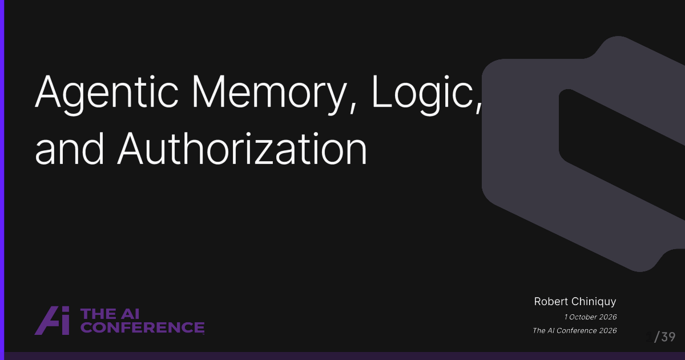

Agentic Memory, Logic, and Authorization
A fun talk I made it about halfway through before I ran out of time. I tried to pack a lot in.

A fun talk I made it about halfway through before I ran out of time. I tried to pack a lot in.